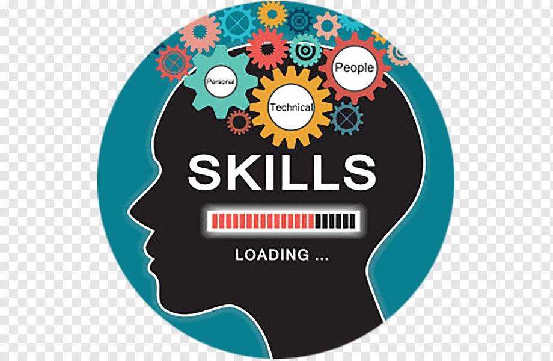

Mes loisirs
- faire du shopping
- dancing
- jouer a des jeux video
- voyage
Les compétences
- Compétences en résolution de problèmes
- Compétences en communication
- Responsabilité
- Créativité
- La coopération et le travail en équipe
- Capacité à s’organiser, prioriser les tâches
|
 |